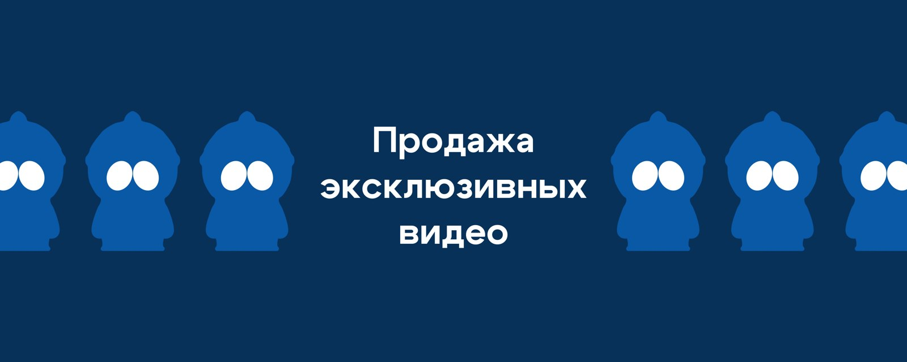
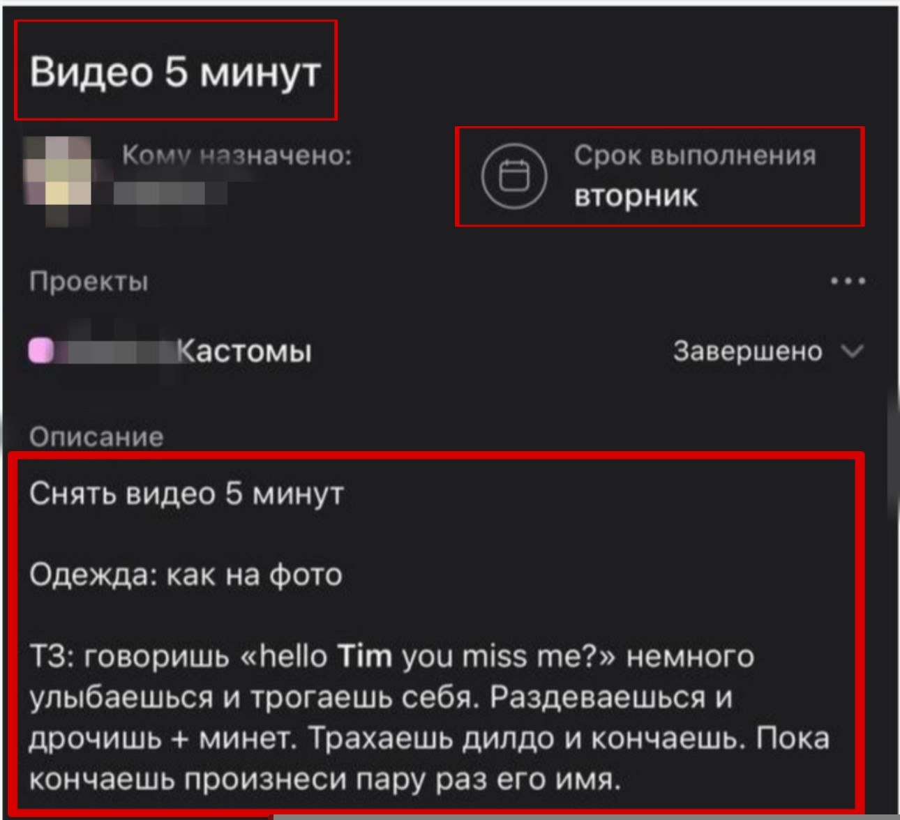

8 урок. Продажа кастомных видео
Продажа кастомных видео — как увеличить чек
Что такое кастом?
Кастом — это индивидуальный запрос от фаната на контент, сделанный специально под его сценарий или фантазию. Это может быть видео или фото, в которых модель выполняет определённые действия, надевает конкретную одежду, называет имя фаната и т.д. Чаще всего запрашивают именно видео.
Почему кастомы важны?
Кастомный контент — самый прибыльный и лояльный формат продаж. Он показывает, что фанат эмоционально вовлечён, готов платить больше и заинтересован в персональном взаимодействии. Если кастомы отсутствуют — это сигнал, что чаттеры ведут слишком поверхностное или шаблонное общение.
Хороший показатель — когда кастомы составляют 10–50% общего дохода от сообщений и чаевых. Примерная цель: один кастом на каждые 5 активных диалогов.
Обычные PPV-видео — это отличная отправная точка. Но со временем один и тот же формат перестаёт работать: фанат привыкает, теряет интерес и требует чего-то большего. Именно здесь в игру вступают кастомы — индивидуальные видео под запрос, которые часто приносят основную часть заработка.
Когда вы уже поработали с фаном, установили контакт и продали несколько PPV, он начинает хотеть большего. Не просто эротическое видео — а видео, созданное лично для него.
- Где звучит его имя
- Где именно он выбирает, что вы наденете
- Где он чувствует, что участвует в процессе
Это и есть эмоциональное вовлечение. А эмоционально вовлечённый фан — это фан, который готов платить больше и возвращаться снова.
Как распознать запрос на кастом
Фан может напрямую спросить:
"Ты делаешь кастомные видео? Я бы хотел, чтобы ты сделала вот это…"
Будьте осторожны, если такой запрос приходит от нового подписчика, который ничего ещё не покупал. Это может быть попытка получить бесплатный контент. Кастомный контент имеет смысл продавать только тем, кто уже покупал и проявил серьёзность. (Бывают исключения так что обрабатываем всех)
Либо мембер может попросить видео, которого у вас в галлереи нету и можно предложить кастом, как альтернативу.
Как вести диалог при запросе кастома
Когда фанат пишет:
«Ты делаешь кастомные видео? Я бы хотел, чтобы ты сделала...»
Не торопитесь сразу называть цену. Ваша задача — вовлечь фаната в процесс: пусть он станет сценаристом и режиссёром своего видео. Чем больше он участвует, тем сильнее будет эмоциональная привязка — и тем легче вам будет озвучить и обосновать цену.
Задавайте такие вопросы:
- Сколько минут должно длиться видео?
- Что ты хочешь, чтобы я надела?
- В каком образе или локации мне быть?
- Что ты хочешь, чтобы я делала?
- Упоминать ли твоё имя?
- Нужно ли использовать игрушки?
- Какой стиль тебе ближе — нежный или дерзкий?
- Нужно ли стонать, и насколько громко?
Чем больше фанат расскажет — тем выше его эмоциональная вовлечённость и готовность заплатить.
Что важно учитывать
- Убедитесь, что запрос фаната не выходит за рамки предпочтений модели. Если в легенде не указано — уточните у тимлида.
- Добавляйте свои идеи. Это показывает заинтересованность и помогает повысить ценность кастома.
- Если фан не может сразу оплатить полную сумму — предложите частичную оплату в виде чаевых, остальное — через PPV.
Покажите, что вам не всё равно!
Не бойтесь предложить свои идеи — особенно если вы уже знаете его вкусы:
"Я помню, ты писал, что любишь медленные teasing-видео. Могу надеть то белое платье, которое тебе понравилось в прошлый раз…"
Такой подход делает фаната не просто клиентом, а частью процесса. И это ключ к высоким чекам и долгосрочным отношениям.
Переговоры
Некоторые фанаты будут пытаться сбить цену на кастомный контент. Важно уметь вести такие переговоры грамотно — мягко, уверенно и с акцентом на ценность модели.
Пример диалога
Фанат:
— Хочу, чтобы ты сделала то и то.
Вы:
— Конечно! Расскажи, как именно ты это хочешь? Какая продолжительность, что я должна надеть, есть ли особые пожелания?
(Уточните все детали, чтобы фанат вовлёкся и сам стал соавтором сценария.)
После обсуждения:
Фанат:
— Я хочу, чтобы ты сделала это, с такими-то деталями.
Вы:
— Поняла. Такой кастом будет стоить 300.
Если фан начинает торговаться:
Фанат:
— Это слишком много.
Вы:
— Разве я не стою этого? Честно, для меня это очень непривлекательно, когда парни пытаются торговаться.
Если фан всё ещё сомневается, вы можете снизить цену, но важно подать это не как уступку, а как исключение:
— Обычно я так не делаю, но ты был очень мил со мной и я это ценю. Только для тебя — 250.
Если фан соглашается — отлично.
Если отказывается:
— Хорошо, как хочешь. Уверена, если ты действительно захочешь — найдёшь возможность. Это может подождать. А пока мы можем просто пообщаться и узнать друг друга получше.
После этого обязательно добавьте заметку на аккаунт фаната, что он интересовался кастомом, но не оплатил. Это поможет при будущих взаимодействиях.
Приём оплаты
Запросите полную предоплату в виде чаевых. Если фан не может оплатить сразу — предложите:
- Оставить 50% в чаевых, остальную сумму — позже через PPV.
- Или сделать весь заказ через чаевые, если так ему удобнее.
Важно: если фан не готов платить даже частично — это сигнал, что он не готов к серьёзной покупке. Не тратьте на него лишнее время и сосредоточьтесь на тех, кто готов платить.
При приёме запроса на кастомное видео учитывайте возможности модели, её гардероб, легенду и её образ.
Если видео кажется вам нестандартным — не давайте обещаний, узнайте как можно больше деталей, скажите фанату что вам нужно подумать и уточните у тимлида.
Работа с прайсом
Когда вы успешно выстроили контакт и заинтересовали фаната, наступает ключевой момент — продажа. Важно понимать: ошибки на этом этапе могут свести на нет весь ваш предыдущий труд. Чаще всего проблемы возникают по двум причинам:
- Навязчивость и отсутствие плавного, органичного перехода к продаже.
- Заниженные цены, которые формируют у фаната ошибочные ожидания.
Общие рекомендации
- Не торопитесь продавать дорого и сразу.
- Строите ценовую стратегию на основе поведения и откликов фаната.
- Следите за тем, чтобы каждое повышение цены было логичным и подкреплено качеством, вовлечением и эмоциональной связью.
Важное замечание!
Не обесценивайте свой продукт. Продажа на платформе — это не гонка за быстрыми долларами, а долгосрочное выстраивание отношений и доверия, которое приносит в итоге значительно больший доход.
Оформление и запись кастомов
1. Получение оплаты:
◦ Как только фан отправил чаевые, сразу переименовываем его, добавляя пометку «ждет кастом» к его нику.
◦ Если мембер оплатил только часть суммы, указываем недостающую сумму в нике, например «анлок 110$».
◦ Без предварительной оплаты кастомы в работу не запускаем.
2. Добавление в список:
◦ Обязательно заносим мембера в список «кастомы», чтобы ему не приходили массовые рассылки.
3. Сроки выполнения:
◦ Устанавливаем модели срок выполнения кастома в Asana — строго +5 дней от даты поступления заказа.
Оформление технического задания (ТЗ) для модели
Техническое задание (ТЗ) должно содержать четкие и понятные инструкции:
- Название задания: Указываем продолжительность кастома (например, «Видео 5 минут»).
- Описание задания:
◦ Обязательно прописываем длительность видео.
◦ Указываем требования к одежде, добавляем фото-пример для наглядности (если необходимо).
◦ Прописываем детально сценарий действий модели, включая:
- Что именно модель должна сказать (прямая речь, имена, реплики).
- Эмоции и действия (например, «улыбаешься», «трогаешь себя», «раздеваешься», «используешь игрушки»).
- Последовательность действий (что именно идет сначала, что потом).
Пример оформления
ТЗ Название: Видео 5 минут
Описание:
- Снять видео продолжительностью 5 минут.
- Одежда: как на прикрепленном фото.
Сценарий:
- Говоришь четко фразу «Hello Tim, you miss me?», немного улыбаешься и начинаешь трогать себя.
- Постепенно раздеваешься и мастурбируешь около минуты.
- Используешь дилдо, показываешь яркие эмоции, доводишь себя до оргазма.
- Во время оргазма произносишь несколько раз имя заказчика.
Прикрепление материалов:
- Всегда прикрепляйте к ТЗ необходимые фото- или видеопримеры, чтобы модель точно понимала ожидания фаната.

🚨 ЗАМЕТКИ О КАСТОМЕ/ПОДПИСКЕ и ПЕРЕГОВОРАХ
Фиксируем кастомы и подписки в заметках по новому шаблону — чтобы избежать путаницы и недопониманий.
КАСТОМ:
дата / идея / имя оператора / крайний срок оплаты
Пример:
29.05 — Модель в бикини стриптиз — Аня — оплата до 12.06
ПОДПИСКА:
дата / имя оператора / когда должен взять подписку
Пример:
29.05 — Саша — должен взять подписку в течение недели
‼️ Если мембер заинтересован, но не называет точную дату оплаты:
Фиксируем идею на максимум 6 дней. Пишем:
дата / идея / имя оператора / заинтересован, но дата оплаты не названа — резерв на 6 дней
Пример:
29.05 — Модель в платье стриптиз — Аня — без даты оплаты — до 05.06
ВО ВРЕМЯ ПЕРЕГОВОРОВ - ДОБАВЛЯЕМ МЕМБЕРА В ПАПКУ “ПЕРЕГОВОРЫ”
- Правила как мы закрепляем переговоры по кастомам. Закрепление нужно, чтобы не терять теплых мемберов и системно возвращаться к тем, кто близок к покупке.
Закрепляем кастом, если:
- Мембер дал идею кастома
Если он пишет идею личного видео под белье модели или какую нибудь одежду к примеру - закрепляем до 6 дней. - Вы предложили идею, и она ему понравилась
В заметках фиксируем, какая идея обсуждалась, и закрепляем на 6 дней максимум.
В течение этих 6 дней мы обязаны напомнить о кастоме.
Если мембер «ломается», игнорит или теряет интерес — убираем переговоры (возможно он просто возьмет в будущем секстинг) - Вы предложили определённый костюм, и мембер хочет написать сценарий под него, но ему нужно время
Закрепляем до момента, когда он обещал вернуться. - Вы обсудили длительность / идею / примерный сценарий кастома
Если зашли в детали — это полноценные переговоры. Закрепляем до 6 дней. - Мембер спрашивает цену или уточняет формат кастома
Если он сам проявляет интерес — закрепляем на 6 дней. - Мембер пишет, что сейчас не может оплатить, но позже сможет
Если он называет примерный срок (вечером, завтра, после работы, на выходных) — закрепляем до этой даты (не более 6 дней). - Мембер торгуется или предлагает свою цену
Такой мембер почти готов купить — закрепляем до 6 дней. - Мембер замолчал, но до этого активно обсуждал идею
Закрепляем до 6 дней, чтобы напомнить — он мог просто отвлечься. - Мембер говорит «дай подумать» или «выберу идею»
Закрепляем на 6 дней. - Мембер выбирает между несколькими вариантами кастома или костюмов
Закрепляем до 6 дней. - Мембер просит изменить сценарий, уточняет детали, добавляет пожелания
Это активная стадия переговоров — закрепляем до 6 дней.
⸻
❗️Важно — взаимодействие между операторами во время переговоров:
В процессе переговоров вы можете писать оператору, который изначально общался с мембером, чтобы:
• уточнить контекст,
• спросить, можно ли вам «встрять» в диалог,
• предложить помочь закрыть кастом и тд
Если закреп не истёк (6 дней не прошло) — в перепродажу кастома НЕ ВСТРЕВАЕМ без разрешения оператора, который ведёт мембера.